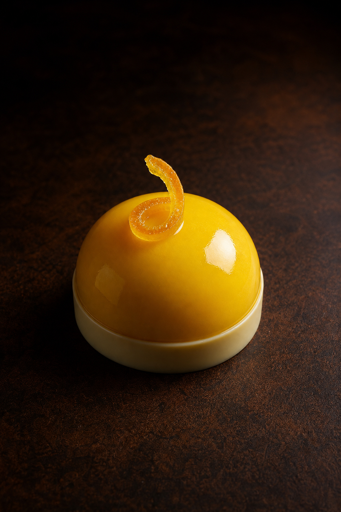
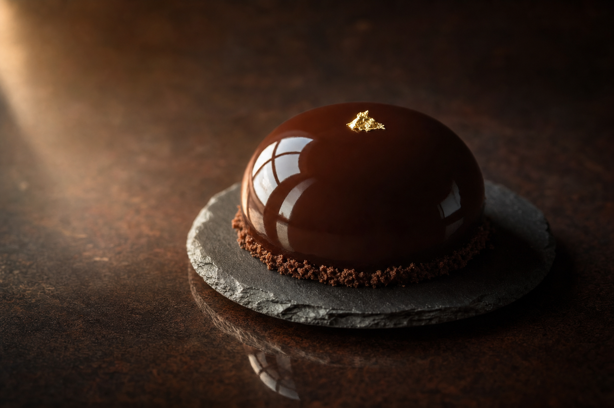
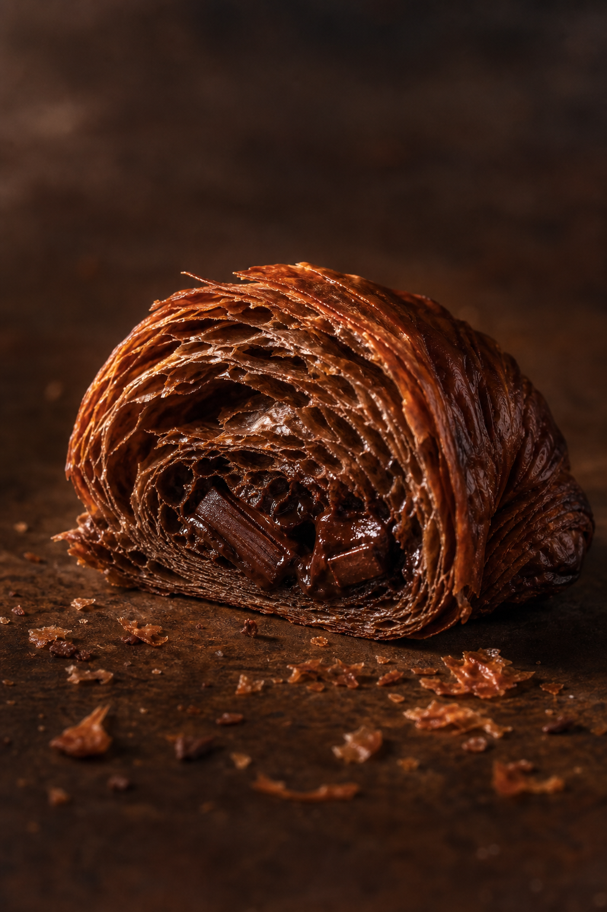
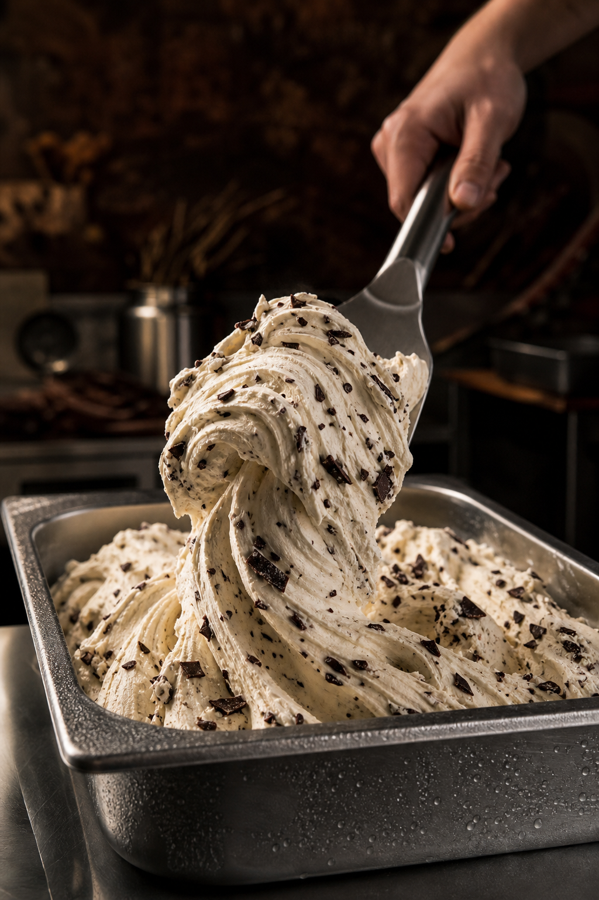

The entremets
Mousse, curd and sponge under a mirror glaze, built in layers and finished by hand. The fruit ones are why people stop driving to Fairfax.
Four at a time
A French pastry counter, a chocolate bench and a gelato bar, in a strip suite off Linton Hall Road. Flour and butter from France. Nothing sits in the case for long.

Mousse, curd and sponge under a mirror glaze, built in layers and finished by hand. The fruit ones are why people stop driving to Fairfax.
Four at a time
Laminated with French butter and left to prove properly, so the layers shatter instead of tearing. Chocolate, ham and Swiss with béchamel, almond.
Almond on weekends
Churned here, in small pans, by the person who makes it. Stracciatella, banana peanut butter, chocolate brownie marshmallow, peach.
Churned hereSilent Night. Love at First Bite. Paradise. The midnight chocolate dome. Mango passion fruit. Brown butter chocolate chip cookies, malted milk balls and chocolate-covered graham crackers on the chocolate side. Ask what came out this morning, because by Sunday it is usually something else.
The two head pastry chefs trained together in Las Vegas under Amaury Guichon before opening this room. The flour and the butter are brought in from France, and the vanilla and most of the chocolate are French too, or single-origin.
That is the whole reason the croissants behave the way they do. A laminated pastry is mostly an argument between butter and time, and cheaper butter loses it. You can taste the difference in a plain croissant before you ever get to the chocolate one.
Everything is made in this room. The gelato is churned in the pans it is served from. The entremets are assembled the morning they go in the case, four at a time, which is the most a small kitchen can do properly in one day.
That is not an oversight. The room is a kitchen with a counter attached. Boxed at the counter, home in four minutes, on the table while it is still cold.
| Monday | Closed |
|---|---|
| Tuesday | 11:00 – 19:00 |
| Wednesday | 11:00 – 19:00 |
| Thursday | 11:00 – 19:00 |
| Friday | 11:00 – 19:00 |
| Saturday | 09:00 – 19:00 |
| Sunday | 09:00 – 17:00 |
An unsolicited design concept for Priory of Indulgence, prepared by Ohtari Labs. This is not their website.